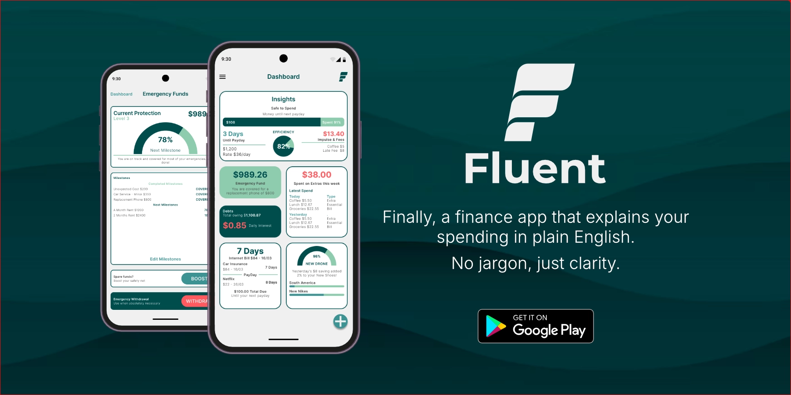
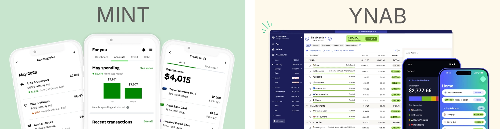
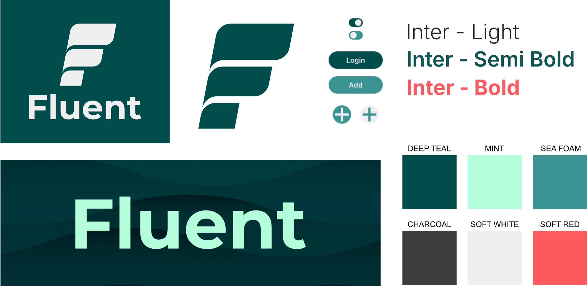
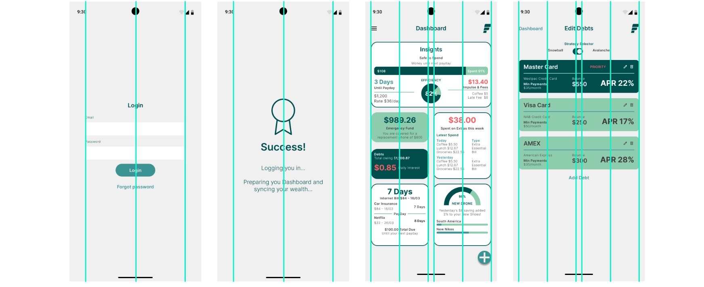
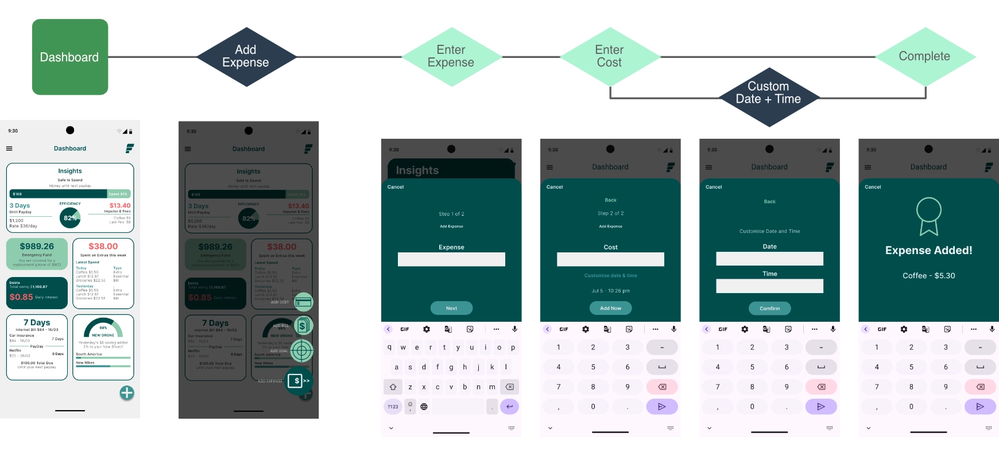

Fluent Financial
UI/UX Designer & Front End Developer
Managing personal finance is historically associated with information overload, cold spreadsheets, and intimidating numbers. For Fluent, my goal was to completely demystify consumer finance by transforming dense personal data arrays into a human centric dashboard experience. Acting as the UX Engineer, I steered the project from raw strategy and research through to high fidelity prototyping and modular layout architecture, proving information hierarchy can alleviate financial anxiety.

Competitive Analysis
To build a better financial tool, I analyzed industry anchors Mint and YNAB. While Mint features a clean UI that is easy on the eyes, its home screen is confusing and feels limited. On the other hand, YNAB handles onboarding smoothly by asking targeted questions, but its heavy text labels make the UI feel like a dense spreadsheet.
My strategy bridges this gap by using a lightweight, modern Hybrid Model (Icon + Label). This UX baseline directly shaped our core features:
- Bento-Grid Dashboard: An instantly scannable, highly visual summary of personal finances.
- AI-Powered Insights: Insights to help make sense of complex data.
- Empathetic Alerts: Notifications that actively suggest actionable solutions.

Targeted Personas for Diverse Financial Behaviors
To ground the user experience, I mapped Maya (29), a freelancer balancing revenue streams across Etsy, PayPal, and Upwork. Exhausted by manual bookkeeping, her primary friction point is platform fatigue. Her journey established a critical project requirement: an automated cash flow pipeline offering clarity on tax liabilities and real-time balances before spending occurs.
Conversely, Leo (24) represents an early-career Gen Z professional facing financial anxiety. While prioritizing lifestyle experiences, rigid "red text" layouts trigger his immediate cognitive avoidance. To sustain engagement, I replaced intimidating balance sheets with a highly visual, glanceable "Safe to Spend" engine.
Designing a Fluid Visual System
Drawing on my decade of branding and print production discipline, I designed the primary logo mark for utility and is inspired by natural, overlapping waves. symbolizing momentum rolling through intimidating financial concepts.
I paired the geometric clarity of the Inter typeface with a deliberate, high contrast color matrix. Deep Teal establishes structural boundaries, Mint acts as an optimistic success indicator, and Soft Red signals high-priority budget leaks. By mapping these visual assets directly into reusable UI tokens, I ensured the brand system effortlessly scales from static vector assets into live code implementation.

The Unified Bento Grid System
To bring the layout strategy to life, I engineered the primary dashboard interface around a unified Bento Grid system. Each financial module exists as a standalone visual container designed to handle distinct types of asymmetric data streams simultaneously.
By standardizing container radiuses and typographic scales, users can instantly scan across contrasting metrics. Such as matching their live Daily Leak ($0.85/day) directly against their overarching Debt and Goals models without encountering visual clutter. This modular structural framework ensures high data density remains completely clear, digestible, and stress-free at a single glance.


Engineering Frictionless Input Flows
Instead of overwhelming users with dense, multi field forms on a single screen, the interface breaks tasks into isolated, bite sized interaction states. By prompting for only one data point at a time, the system minimizes cognitive load and keeps the viewport completely clear.
Under the hood, this modular flow isolates input state validation to single components, ensuring that data is verified instantly at each step before updating the core dashboard data models.

Front End Architecture
To bridge the gap between high fidelity Figma specifications and front end engineering, I translated the visual Bento system into a responsive layout rule engine that maintains geometric alignment across fluid browser viewports.
This granular approach ensures that custom elements such as interactive progress bars, active button inputs, and micro animations remain pixel perfect, accessible, and ready to slot straight into the main codebase.
/* Master Bento Grid Interface Engine */
.fluent-dashboard-grid {
display: grid;
grid-template-columns: 1fr;
gap: 1.25rem;
max-width: 1200px;
}
@media (min-width : 768px) {
.fluent-dashboard-grid {
grid-template-columns: repeat(3, 1fr);
}
.hero-insights {
grid-column: span 2;
}
}